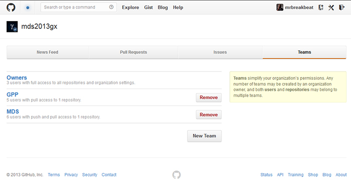

RadarCriminal
MDS/GPP 2013.2 [Grupo 2]
Hilmer Rodrigues Nery
Sep 17, 2013
MDS - Métodos de Desenvolvimento de Software
| Nome | Papel |
|---|---|
| Sérgio Silva | Desenvolvimento / Gestão |
| Eduardo Augusto | Gerência de Configuração e Mudança |
| Lucas Carvalho | Desenvolvimento Front/BackEnd |
| Lucas Andrade | Desenvolvimento Front/BackEnd |
| Eliseu Egewarth | Desenvolvimento Front/BackEnd |
Links Importantes
Wiki do Grupo | GitHub | Grupo FacebookDisciplina:
Gerência de Configuração e Mudanças
Esta disciplina é parte do processo Unificado e é nela em que são feitas: Medição, Analise e a Gestão de como serão feitas as mudanças do projeto.
Gerência de Configuração e Mudanças
Segundo o Processo Unificado
Teams GitHub

Gerenciando permissões de grupos de usuários.
Conceito
Para que serve a Gerência de Configuração e Mudanças?
- Gerenciamento de configuração
- Gerenciamento de solicitações de mudança
- Gerenciamento de status e medição
Conceito
Gerência de Configuração e Mudanças
Esta disciplina explica como controlar e sincronizar a evolução do conjunto de Produtos de Trabalho que compõem o sistema de software.
Gerencia de Configuração
Essencial para controlar os vários Produtos de Trabalho produzidos por muitas pessoas que trabalham em um projeto em comum
Evitar confusões dispendiosas, e assegura que os Produtos de Trabalho resultantes não entrem em conflito devido a alguns dos seguintes tipos de problemas:
Atualização simultânea
Notificação Limitada
Artefatos
Escolhidos pelo grupo para o projeto:
Configurar Ambiente do Gerenciamento de Configuração
Confirmar CR Duplicado ou Rejeitado
Enviar Controle de Mudanças
Revisar Controle de Mudanças
Onde dentro do UP?
Onde a disciplina aparece no Processo Unificado?
Gráfico das Baleias

Disciplinas em função das Fases do Projeto.
Artefatos Gerados
Entrada:
Documento de Visão (Plano de Desenvolvimento de Software)
Saída:
Papéis Envolvidos
Gerente de Configuração e Mudanças:
Eduardo Augusto
O que ele faz?
Esta função gerencia a infra-estrutura e o ambiente do Gerenciamento de Configuração (CM) geral para a equipe de desenvolvimento de produto.
Rotinas / Tarefas Associadas a este papel:
Configuração do Ambiente.
Determinação de Política de merge na ferramenta de versionamento do projeto. (Junto com o(s) Gerente(s) do projeto)
Bibliografia
IBM Rational Unified Process
Google HTML5 Slide Template
Artefatos RUP (Português)
Introdução ao Gerenciamento de Configuração e Mudança